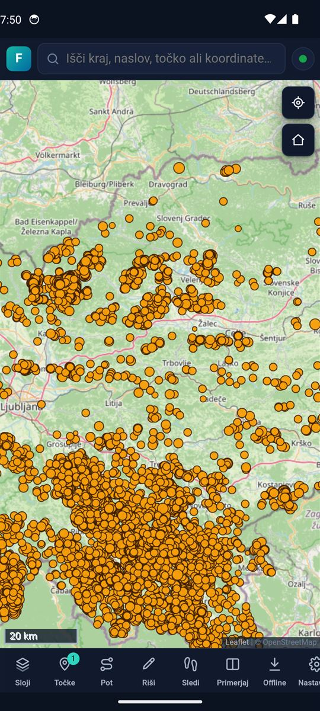
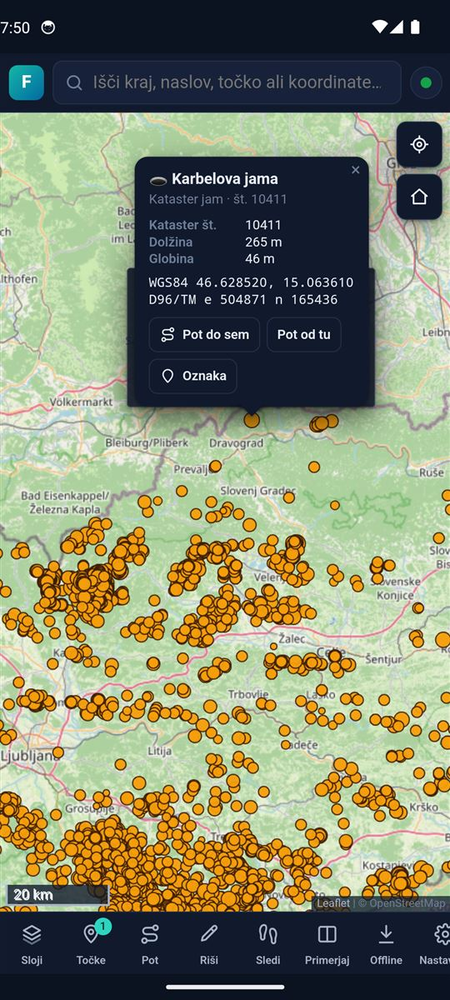
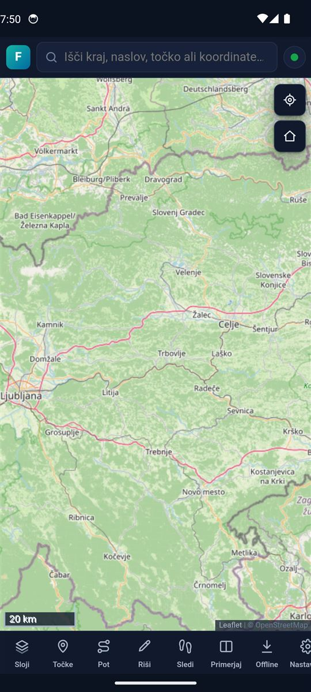
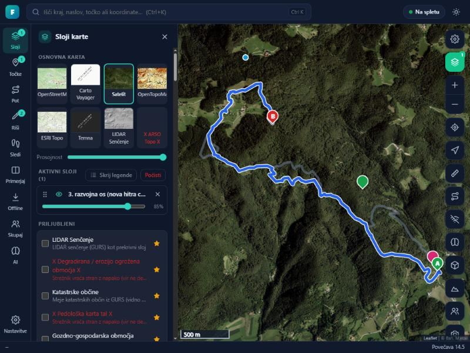
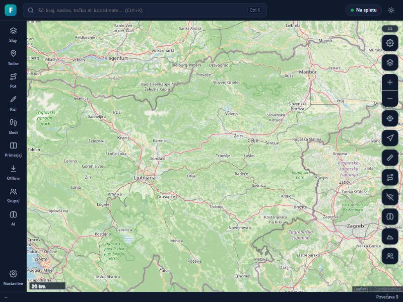

Windows
Windows 10 in 11 (64-bit). Razpakiraj in zaženi FrancMap.exe.
Prenesi za WindowsUradne karte GURS, LIDAR, kataster jam, poti, skupno delo in prostor za AI v eni aplikaciji. Odpri jo v brskalniku ali namesti — v aplikaciji ostane vse, kar vidiš, shranjeno tudi brez signala.


Brez računa, brez namestitve s skrbniškimi pravicami. Podatki ostanejo na tvoji napravi.
Windows 10 in 11 (64-bit). Razpakiraj in zaženi FrancMap.exe.
Prenesi za WindowsAndroid 8.0 ali novejši. Ob namestitvi dovoli »namestitev neznanih aplikacij«.
Prenesi za AndroidRazličica za Linux je v načrtu.
Različici za Mac in iPhone sta v načrtu.
Ortofoto, LIDAR senčenje, kataster parcel, GJI omrežja, Natura 2000 in zgodovinski posnetki. Nedelujoči viri so označeni z X.
Vsaka jama s številko katastra, dolžino in globino. Filtri za najdaljše in najgloblje, iskanje po imenu.
Karte, iskanja, poti in točke se shranijo ob ogledu. Območja lahko prenese vnaprej za cel izlet.
Spletna različica deluje brez namestitve. Gumbe na karti lahko prestaviš kamorkoli na zaslonu.
Vtičniki z dostopom do karte, vidnih točk, jam in sledi ter pripravljenim pogovornim oknom.
WGS84 in D96/TM povsod: v vrstici stanja, ob lokaciji in pri iskanju koordinat.
Ekipa v istem omrežju deli oznake, risbe, lokacijo in sporočila. Brez oblaka in brez računa.
Posneto v aplikaciji 1.4–1.5.



| Naprava | Sistem | Velikost | Stanje |
|---|---|---|---|
| Spletna različica | Sodoben brskalnik (Chrome, Edge, Firefox, Safari); karte brez povezave samo v aplikaciji | — | Na voljo |
| Windows | Windows 10 ali 11, 64-bit, Edge WebView2 | 13 MB | Na voljo |
| Android | Android 8.0+, posodobljen Android System WebView | 0,6 MB | Na voljo |
| Linux | — | — | Kmalu |
| Apple (Mac, iPhone) | — | — | Kmalu |